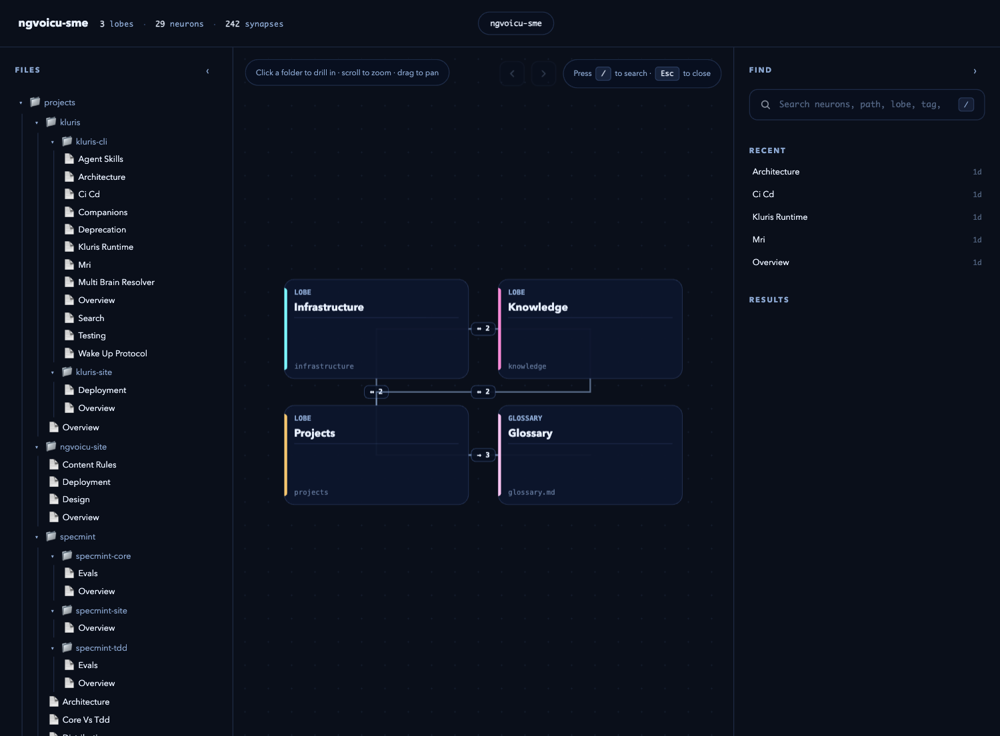
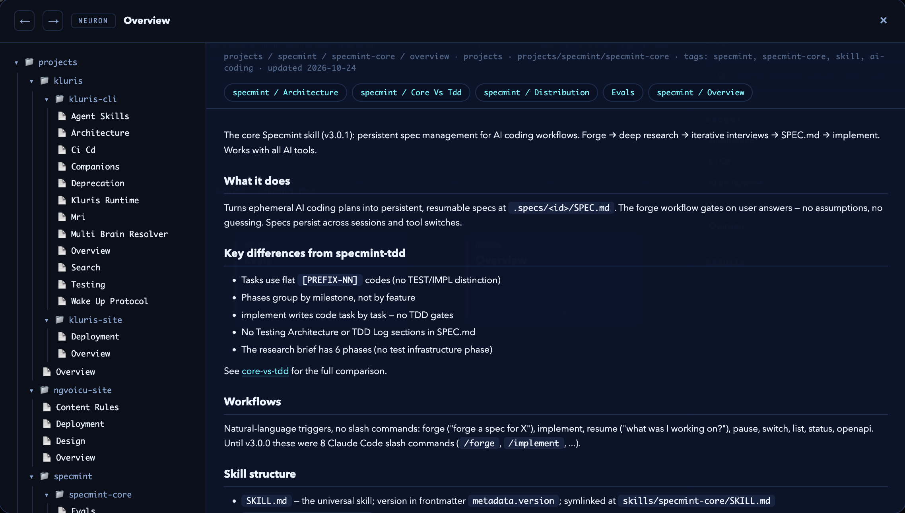
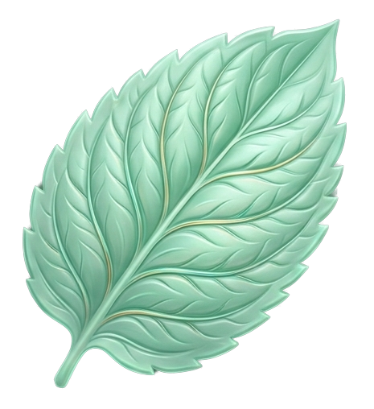

Kluris turns your AI agents into a subject matter expert that never sleeps and never quits — built collaboratively with you, one approved entry at a time.
Customizable brains · Human-curated · Git-backed · Free forever
Agents forget
Every new session starts from zero. Your codebase is re-learned every morning.
Docs are for humans
Wikis, Notion, Confluence — agents can't search them, link them, or write back.
Senior devs leave
The "why" behind every decision walks out with them. A year later nobody remembers.
Kluris vs generated graphs
Graphify and Understand Anything are useful for understanding what exists in a repo or corpus. Kluris is where your team preserves the reviewed decisions, conventions, and cross-project context future agents should trust.
Swipe the comparison table horizontally.
| Dimension | Graphify | Understand Anything | Kluris |
|---|---|---|---|
| Core job | Turn a folder of code, docs, papers, images, or video into a queryable knowledge graph. | Analyze a codebase into an interactive dashboard of files, functions, classes, dependencies, and tours. | Turn agents into team SMEs with shared, durable knowledge they can search, cite, and update. |
| Knowledge source | Automatic extraction from artifacts using parsers, local processing, and LLM-assisted semantic passes. | Automatic multi-agent scan of the current project, with structural parsing plus semantic summaries. | Human-curated neurons: the agent proposes, but the team reviews and approves what becomes durable truth. |
| Best at | Fast corpus discovery: structure, relationships, clusters, reports, and graph visualization. | Repo onboarding: visual exploration, guided tours, semantic search, and change-impact understanding. | Team memory: architecture decisions, conventions, lessons learned, deprecations, and context across many projects. |
| Output | graphify-out/ with graph.html, GRAPH_REPORT.md, and graph.json. |
.understand-anything/knowledge-graph.json plus a dashboard and related generated artifacts. |
brain.md, map.md, glossary, neurons, synapses, git history, and MRI visualization. |
| Trust model | Generated graph with confidence labels like extracted, inferred, or ambiguous. | Generated summaries and relationships from a pipeline that can be re-run incrementally. | Reviewed by default: knowledge is explicit markdown, versioned in git, and corrected by humans. |
| Team workflow | Great first pass: map raw material, then decide what is worth keeping. | Great onboarding layer: teach a repo quickly and expose impact before changing code. | The durable layer: store only the decisions and lessons that should survive sessions, tools, and employees. |
Run Graphify or Understand Anything to discover structure fast.
Ask the agent which findings are durable decisions, risks, or conventions.
Save the approved takeaways into Kluris so every future agent starts smarter.
Beat 1 · Set up
A brain is a git repo of curated markdown that every AI agent on your team can read as a subject matter expert. One command to install. One wizard to create your first one.
$ curl -fsSL https://kluris.ngvoicu.dev/install.sh | sh # open a new terminal, then: $ kluris doctor
> irm https://kluris.ngvoicu.dev/install.ps1 | iex # from cmd.exe instead: > powershell -ExecutionPolicy ByPass -c "irm https://kluris.ngvoicu.dev/install.ps1 | iex" # open a new terminal, then: > kluris doctor
$ kluris self-update # newest release, then kluris doctor $ kluris self-update --check # only show the versions $ kluris self-uninstall # stops sync services; your brains stay
$ curl -fsSL https://kluris.ngvoicu.dev/install.sh | KLURIS_VERSION=3.0.0 sh > $env:KLURIS_VERSION = '3.0.0'; irm https://kluris.ngvoicu.dev/install.ps1 | iex
No admin rights. Kluris is one binary in ~/.kluris/bin, and the installer adds that folder to your PATH: open a new terminal so it takes effect. macOS (Apple Silicon and Intel), Linux x86_64 and arm64, Windows x86_64 and arm64. git is the only other tool it uses.
$ kluris create Create a new brain acme Shared brain for ACME projects [~]: ~/Projects (product-group, personal, product, research, blank) [product-group]: (1=local, 2=with remote, 3=no git) [1]: 1 [main]: [1] specmint-core (spec-driven-development companion) [2] specmint-tdd (spec-driven-development with test-driven-development focus) [3] core + tdd [4] skip [5] specmint-core-html (spec-driven-development with canonical SPEC.html) [6] specmint-tdd-html (TDD-focused specs with canonical SPEC.html) [7] all [4]: 3 Brain created: acme (product-group) Path: ~/Projects/acme Lobes: 3 Agent skill installed: kluris-acme Claude/Codex/Gemini/etc: /kluris-acme Hermes: /skill kluris-acme (or start with `hermes -s kluris-acme`) Created a new Hermes profile later? Run `kluris doctor` to refresh Kluris skills.
product-group defaults
acme/ ├── kluris.yml # gitignored — your local config ├── brain.md # root directory, auto-generated ├── glossary.md # domain terms, hand-edited ├── README.md # usage guide ├── .gitignore ├── projects/ │ ├── map.md # lobe index, auto-generated │ └── (your neurons go here) ├── infrastructure/ │ ├── map.md │ └── (your neurons go here) └── knowledge/ ├── map.md └── (your neurons go here)
Scaffolded defaults for the product-group brain type. You add, rename, or remove lobes as your team grows.
Every brain is a git repo. Your knowledge is markdown. Nothing is magic.
Beat 2 · Teach
Open your AI agent in a project. Two steps make every future session smoother — first wire kluris in so every coding agent that lands in this repo finds the brain, then have the agent learn the project end-to-end. Lobes are folders you create to group related ideas — one per concern. Neurons are the markdown files inside them. You approve every neuron before it lands.
Drop a small pointer into the project's CLAUDE.md and AGENTS.md. The agent surveys both, creates them if missing, or reformulates a stale pointer it finds. Same ## Knowledge base block in both files.
> /kluris-acme setup this project Surveying CLAUDE.md and AGENTS.md... : missing — propose creating : missing — propose creating (same in both files): ────────────────────────────────────── ## Knowledge base Read and write to the **acme** brain through kluris (never edit brain files by hand). Use the /kluris-acme skill — search, learn, remember, create. ────────────────────────────────────── [a]pprove [e]dit [s]kip: a ✓ CLAUDE.md created ✓ AGENTS.md created (same block)
> /kluris-acme learn everything about this project Reading: src/, package.json, README, schema/, .github/, docs/... › projects/btb-core/auth-flow.md › projects/btb-core/data-model.md › projects/btb-core/api-shape.md › infrastructure/docker-builds.md › knowledge/raw-sql-no-jpa.md ... 7 more projects/btb-core/auth-flow.md ────────────────────────────────────── # Auth flow Keycloak OIDC. Frontend obtains JWT, passes it to backend as Bearer token. Backend validates via JWKS. Refresh at 80% TTL. [clerk-vs-keycloak.md] ────────────────────────────────────── [a]pprove [e]dit [s]kip:
Point the agent at the whole project and let it propose neurons across every lobe — one at a time, with a preview of every piece before it is written.
Agent = inside your AI coding agent, opened on a project. Terminal = in your shell.
Beat 3 · See
One command. A local, interactive map you can share.
$ kluris mri MRI complete — /home/user/ngvoicu-sme/brain-mri.html Open: file:///home/user/ngvoicu-sme/brain-mri.html 42 nodes, 242 edges Open the link in any browser. Commit it, email it, drop it in Slack — it runs anywhere, with no server.

The header counts the brain (29 neurons · 242 synapses here), the file tree on the left collapses, and Find on the right searches neurons, paths, lobes, tags, and YAML, with the most recently updated neurons listed beneath. Click a folder to drill in; click a neuron to open it.

One click on any neuron box opens it in a modal, fully rendered, with its path, tags and connected-neuron buttons above the text and back and forward buttons to retrace your steps, so you can walk a topic in seconds. This is what agents see — now visible to you.
The MRI is a single self-contained HTML file — no server, no account, no external calls. Run kluris mri, open the link it prints in any browser, and you've got the whole brain to explore. It opens on the brain's lobes as C4-style boxes with the synapse counts between them. Click a folder to drill into its sublobes, click a neuron to read it rendered, and use the breadcrumb or back and forward buttons to walk out again.
It's a tool for three audiences at once: you (spot isolated neurons that should be cross-linked), your team (shared mental model of what we know), and new hires (five-minute onboarding instead of five days of spelunking). Since it's just HTML, you can commit it, email it, or drop it in Slack.
Lines between neurons are synapses — cross-links agents follow to load related context. Because the brain is a pre-digested snapshot, agents spend far fewer tokens orienting to a codebase than without one.
Beat 4 · Use
Every agent on your team can search and query across the brain. The agent shows you exactly which neurons it read — no hallucinations, no vibe.
> /kluris-acme how does the app refresh its token? 3 result(s) for 'token refresh' in acme 233 Auth flow projects/btb-core/auth-flow.md The web app refreshes the access token at 80% of its lifetime... 115 Keycloak setup infrastructure/keycloak-setup.md 31 JWT signing key rotation knowledge/jwt-rotation.md
> /kluris-acme what do we know about Docker? Reading: infrastructure/docker-builds.md infrastructure/environments.md You build multi-stage Dockerfiles with BuildKit. Images go to ghcr.io/zeespire/. Prod uses Coolify on Hetzner with Cloudflare Tunnel (zero public ports).
Ask in your own words; the agent turns the question into a kluris search. Results are ranked, not filtered: a match in a title or heading weighs more than one in the body, and each ## section is scored on its own, so a hit points at the heading and line where the answer is. Word forms and accents don’t matter (refreshing tokens finds “refreshes the access token”), in English and Romanian. Deprecated neurons stay in the results, ranked lower and labelled.

+ Pair · Specmint
Kluris is the brain. Specmint turns a feature request into a persistent spec built from deep research and iterative interviews. Use them together and the research phase starts half-done — grounded in your code and the knowledge your team already agreed to.
1 · Shorter research
Forge reads your repo and consults the brain. Decisions the team already made don't get re-discovered from the code.
2 · Sharper interviews
Not "what's your auth?" — but "your brain says Keycloak for cost — should GitHub OAuth live behind it as an IdP, or beside it?"
3 · Traceable decisions
Every entry in the resulting SPEC.md cites the neuron that backs it. A week later you can still tell why.
> /kluris-acme write a spec to add OAuth sign-in with GitHub ● Reading src/auth/ (14 files) ● Reading config/GlobalExceptionHandler.kt ← the kluris bit ● /kluris-acme what do we know about auth → knowledge/auth-decisions.md → projects/btb-core/auth-flow.md → knowledge/jwt-rotation.md Q1. Brain says you chose Keycloak for cost. Should GitHub OAuth live behind Keycloak as an IdP, or alongside it? Q2. Auth-flow neuron says refresh-at-80% TTL. Same cadence for the GitHub session? ✓ .specs/github-oauth-signin/SPEC.md ✓ 3 phases · 14 tasks · 4 decisions logged ✓ Every decision references a neuron
Enable Specmint Companions
specmint-core
Markdown specResearch · Interview · SPEC.md · Implement. The lightweight workflow shown above.
kluris companion add specmint-core
bundled with kluris
specmint-tdd
Markdown + TDDSame markdown forge flow, with strict TDD — a failing test before implementation.
kluris companion add specmint-tdd
bundled with kluris
specmint-core-html
Canonical HTMLSpec-first workflow where .specs/<id>/SPEC.html is the source of truth.
kluris companion add specmint-core-html
bundled with kluris
specmint-tdd-html
HTML + RGRCanonical SPEC.html with TEST/IMPL pairs, red-green-refactor state, and TDD log.
kluris companion add specmint-tdd-html
bundled with kluris
Enable companions per brain. Each one is a folder bundled with Kluris: a SKILL.md plus the references/ it points at, and assets/ for the two HTML flavors. Enabling one copies it into ~/.kluris/companions/<name>/ and adds a short reference to the brain’s generated kluris-<name> skill. Companions are read from there, never installed as skills of their own, and kluris doctor refreshes them.
Beat 5 · Grow
Add lobes, add neurons, keep going — all through the agent.
> /kluris-acme add a compliance lobe for SOC2 and GDPR notes compliance/ ✓ will create compliance/map.md ✓ will link into brain.md [a]pprove [c]ancel:
> /kluris-acme remember that SOC2 audit evidence lives in the compliance-evidence/ bucket, rotated yearly compliance/soc2-evidence.md ────────────────────────────────────── # SOC2 audit evidence Evidence artifacts live in the `compliance-evidence/` S3 bucket. Rotation is annual. Access is restricted to the security team. ────────────────────────────────────── [a]pprove [e]dit [s]kip:
Lobes are folders, neurons are markdown files inside them — but you don't create them by hand. Ask the agent. It proposes the structure, shows you the diff, and writes it only after you approve. Nesting works the same way: "add a sublobe for the endpoints of acme-api" and the agent puts it in the right place.
The loop closes. After every shipped feature — bug fix, deploy, env-var change — ask /kluris-acme remember what we worked on and the agent drafts new neurons from the session. Approve, edit, reject. The brain that taught you today gets a little smarter for tomorrow's teammate.
Run kluris dream to regenerate maps and validate links after structural changes. The agent commits what you approved and shares it with kluris sync — see working together. Have more than one brain? Each installs as /kluris-<name> and everything above works the same — see the appendix.
Beat 6 · Self-improve
Ask the agent to audit the brain. It reads across every neuron, spots connections you never wrote, and proposes new synapses — you approve each one before anything changes.
> /kluris-acme review this brain and create more synapses Reading 34 neurons across 3 lobes... › projects/btb/auth-flow.md ↔ knowledge/jwt-rotation.md › infrastructure/docker-builds.md ↔ infrastructure/environments.md › knowledge/use-raw-sql.md ↔ projects/btb/reporting.md › projects/btb/import.md ↔ infrastructure/keycloak-setup.md ... 10 more projects/btb/auth-flow.md ────────────────────────────────────── --- title: Auth flow related: - ./clerk-vs-keycloak.md - ../knowledge/jwt-rotation.md (new) --- ────────────────────────────────────── [a]pprove all [o]ne-by-one [s]kip: o ✓ 12 applied · 2 skipped ✓ bidirectional links written ✓ maps regenerated
Grounded
The agent only proposes synapses between neurons that already exist — no hallucinated references.
Reviewed
You approve every change — one-shot, one-by-one, or skip — before anything is written to disk.
Compounding
Re-run it monthly. As the brain grows, the agent finds new patterns and your knowledge graph gets denser.
Beat 7 · Capture session
At the end of a long pairing session — research, debugging, decisions, gotchas — sweep the conversation into the brain in one step. The agent replays the chat, pulls every brain-worthy fact, and walks you through proposed neurons one at a time.
> /kluris-acme remember everything from this session Replaying the conversation... Identifying brain-worthy items: › Decision: use TIMESTAMPTZ for every timestamp column › Convention: API errors must include error_code alongside message › Gotcha: Cloudflare Tunnel blocks port 587 — use 465 SMTPS › Stakeholder: legal flagged session-token storage for review ... 3 more candidates knowledge/timestamps-tz.md ────────────────────────────────────── # Use TIMESTAMPTZ for every timestamp column Decided 2026-05-12. Standardized on TIMESTAMPTZ over TIMESTAMP in every schema change. Reason: avoids the silent UTC drift gotcha when servers or clients sit in different timezones. [../projects/btb-core/data-model.md] ────────────────────────────────────── [a]pprove [e]dit [s]kip: a ✓ 5 of 7 captured, 2 skipped, 0 edited acme: pushed
No retyping
You don't repeat decisions to the agent — it already heard them. The sweep extracts what's worth keeping and skips ephemeral debugging.
Same approval
Each candidate goes through the standard approve · edit · skip flow. Nothing lands without your sign-off.
Compounds
Tomorrow's agents start their session with what last week's agents learned. Pairing sessions become permanent team knowledge.
Or capture a single decision in one line: /kluris-acme remember we chose raw SQL over JPA. Same flow, just narrower.
Together · One brain, many people
The whole team writes to the same brain, and nobody has to pull, push or untangle a merge by hand. Before the agent writes, it syncs with your teammates. After you approve, it commits exactly the files it wrote and shares them. When two people changed the same line, it shows you both versions and asks which to keep. The brain never gets conflict markers, and nothing in your folder changes until you choose.
> /kluris-acme remember access tokens are now signed with RS256 acme: pulled knowledge/auth.md [a]pprove [e]dit [s]kip: a Committed 6408cab in acme: kluris: update knowledge/auth.md knowledge/auth.md acme: pushed
# Bob added a tag and changed another line of auth.md $ kluris sync --brain acme acme: pulled, pushed auto-merged: knowledge/auth.md # both edits are in, both tags kept: tags: - auth - keycloak - jwt ... Access tokens live 15 minutes, signed with RS256. Refresh tokens live 8 hours and rotate on every use.
# Alice wrote "10 minutes", Bob pushed "30 minutes" first $ kluris sync --brain acme acme: 1 conflict(s), nothing changed; settle them with `kluris resolve`: content: knowledge/auth.md $ kluris status --brain acme ... Sync: blocked by 1 conflict; settle it with kluris resolve content: knowledge/auth.md # the team agrees on Bob's 30 minutes $ kluris resolve --brain acme knowledge/auth.md --theirs Resolved knowledge/auth.md (theirs); committed e6f6f73 and pushed
In your agent you never type these: it shows you what each side changed, asks which to keep (or proposes a merged text for you to approve), then settles it. --ours keeps your version, --theirs the teammate’s, --file a text you merged, and --abort drops the open conflict.
Merged on their own
Left for a person
Reads
Before they read, kluris wake-up and kluris search fetch your teammates’ changes quietly, at most once a minute, and never touch your files. The changes come into your brain with kluris sync, which the agent runs before every write and whenever you ask for the team’s latest. KLURIS_NO_AUTO_SYNC=1 turns the fetch off.
Always in sync
kluris sync --watch syncs whenever you commit or a teammate pushes. --install-service runs it in the background from login on, as you, with no admin rights: a launchd agent on macOS, a systemd user unit on Linux, a Task Scheduler task on Windows.
$ kluris sync --watch --brain acme
2026-10-27 13:36:28 acme: up to date
2026-10-27 13:36:34 acme: pulled
A file with uncommitted changes is never overwritten. Sync never asks for credentials, runs your repository’s git hooks, and needs git 2.38 or newer. kluris sync --brain all syncs every brain.
Reference
Kluris lives in two places. You run the CLI in your terminal to set up and maintain your brains. Your AI agents load one named skill per brain — kluris-<name> — inside Claude Code, Cursor, Codex, Gemini CLI, Copilot, Devin, OpenCode, Kilo Code, Junie, Hermes Agent or Antigravity (or any other agent that loads SKILL.md skills and can run a shell), followed by whatever you want to say. Keep the agent open on a project so it has code to read.
$ kluris <cmd>
Run in your shell — bash, zsh, fish, PowerShell. The purple $ prompt. Use it for install, setup, snapshots, and housekeeping.
> /kluris-acme <pattern>
Run inside your AI coding agent — Claude Code, Cursor, Codex, Gemini CLI, Copilot, Devin, OpenCode, Kilo Code, Junie, Hermes Agent, Antigravity — with a project open. Most agents invoke /kluris-acme; Hermes uses /skill kluris-acme or hermes -s kluris-acme. Use it while coding to teach and query the brain.
Run these in bash, zsh, fish, or PowerShell.
| create | Create a new brain (a wizard, or --type, --remote, --no-git) |
| register <path> | Register an existing brain directory on disk |
| list | List registered brains |
| status | Show brain tree, recent changes, and neuron counts |
| search <query> | Ranked search across neurons, glossary, and brain.md |
| wake-up | Compact brain snapshot the agent loads once per session |
| companion list | Companion playbooks, which are installed, which brains use them |
| companion add | Turn a companion on for a brain |
| companion remove | Turn a companion off for a brain |
| dream | Regenerate maps, auto-fix safe issues, and validate links |
| mri | Generate the interactive brain visualization; prints a file:// link |
| remove <name> | Unregister a brain (keeps files on disk) |
| doctor | Check prerequisites and refresh installed agent skills |
| help | The command list, or one command’s summary |
| commit | Commit approved brain files and the maps they change (--paths) |
| sync | Fetch, merge and push brains; conflicts go to a person (--brain all) |
| resolve <path> | Settle an open sync conflict path by path (--ours, --theirs, --file) |
| self-update | Update kluris to the newest release (--check only looks) |
| self-uninstall | Remove the installed kluris; brains stay (--purge: also ~/.kluris and Kluris skills) |
All CLI commands support --json for machine-readable output.
Every command that acts on a brain — search, wake-up, status, dream, mri, commit, sync, resolve, companion — takes --brain NAME. With two or more brains registered, see more than one brain.
Brains are plain git repos. kluris sync fetches, merges and pushes them for you; plain git works too, for branches and history.
Most users create and organize lobes and neurons by asking their AI agent, then run dream to refresh maps and links.
Each brain has its own skill — kluris-<name>. Most agents expose it as /kluris-<name>; Hermes loads it with /skill kluris-<name>.
Type these inside Claude Code, Cursor, Codex, Gemini CLI, Copilot, Devin, OpenCode, Kilo Code, Junie, Hermes Agent or Antigravity — with a project open, so the agent can read your code. Examples below use /kluris-acme for clarity.
| /kluris-acme learn <topic> | Agent analyzes code, proposes neurons |
| /kluris-acme remember <fact> | Quick-capture a decision as a neuron |
| /kluris-acme remember from this session | Sweep the current chat, propose neurons for everything worth keeping |
| /kluris-acme add a <name> lobe | Propose a new lobe, approve before it lands |
| /kluris-acme add a sublobe for ... | Nest a lobe under an existing one |
| /kluris-acme search <term> | Search the brain for a topic |
| /kluris-acme what do we know about ... | Ask the brain a question |
| /kluris-acme use brain knowledge and codebase and let's write a spec for ... | Ground a spec in both the brain and the live code |
| /kluris-acme use brain knowledge and codebase and let's implement ... | Implement a feature grounded in both the brain and the live code |
| /kluris-acme review this brain | Audit the brain, propose more synapses |
| /kluris-acme create a decision | Create a decision record neuron |
| /kluris-acme create an incident | Create an incident report neuron |
| /kluris-acme create a runbook | Create a runbook neuron |
| /kluris-acme open <file> | Open a neuron and read it |
| /kluris-acme deprecate <file> | Mark a neuron as deprecated |
Agent patterns are free-form — say it naturally. The agent figures out the shape.
On the first /kluris-acme of a session, the agent runs kluris wake-up --brain acme --json once, through its shell. It keeps that snapshot — the brain.md body, every lobe with its neuron count, the 5 most recently updated neurons, the glossary, and any deprecation warnings — so it can decode your jargon and avoid citing superseded neurons. It refreshes the snapshot only after the brain changes: a remember or learn, a kluris dream, a kluris sync that merged teammates’ changes, or a file edit you tell it about. Teammates’ changes arrive through the kluris sync it runs before every write, or whenever you ask for the latest.
> /kluris-acme what do we know about Docker?
You never call it yourself. To see what the agent sees, run kluris wake-up --brain acme in your terminal (add --json for the raw payload).
Every brain installs as one kluris-<name> skill: a SKILL.md with instructions and the kluris commands to run. Kluris writes it to the shared folder most agents read, and gives a few agents their own copy.
| ~/.agents/skills/ | Cursor, Codex, Gemini CLI, Devin, OpenCode, Kilo Code, Junie and other agents that read this shared folder |
| ~/.claude/skills/ | Claude Code |
| ~/.hermes/skills/ + profiles/*/skills/ | Hermes Agent, its own folder and every profile |
| ~/.gemini/config/skills/ | Antigravity |
| $COPILOT_HOME/skills/ | GitHub Copilot, when COPILOT_HOME is set |
Created a new Hermes profile, or set COPILOT_HOME, after adding a brain? Run kluris doctor to install the skills there too. To skip an agent, trim agents.commands_for in the brain’s kluris.yml; the shared folder always gets every brain’s skill.
Appendix
A work brain, a personal brain, a team brain you cloned from GitHub — kluris keeps them separate. Each brain installs as its own named skill, so the agent never has to guess which one you mean.
$ kluris list Registered Brains Name Path Description Companions -------- ------------------------- ------------------------------- --------------------------- acme ~/Projects/acme Shared brain for ACME projects specmint-core, specmint-tdd personal ~/Projects/personal-brain Personal tasks, notes and ideas (none) research ~/Projects/research-brain Research notes and findings (none) $ kluris status Multiple brains registered. Pick one: [1] acme (~/Projects/acme) [2] personal (~/Projects/personal-brain) [3] research (~/Projects/research-brain) [4] all 2 personal Lobes: 3, Neurons: 18 2026-04-05 brain: capture q2 goals 2026-04-04 brain: initialize personal $ git clone git@github.com:acme/team-brain.git ~/brains/team-brain Cloning into ~/brains/team-brain... $ kluris register ~/brains/team-brain Brain registered: team-brain Path: ~/brains/team-brain Agent skill installed: kluris-team-brain Claude/Codex/Gemini/etc: /kluris-team-brain Hermes: /skill kluris-team-brain (or start with `hermes -s kluris-team-brain`) Created a new Hermes profile later? Run `kluris doctor` to refresh Kluris skills.
$ kluris dream --brain all acme health report: Lobes: infrastructure, knowledge, projects Maps regenerated: 3 (infrastructure, knowledge, projects) OK synapses … personal health report: … research health report: … Brain is healthy. $ kluris search auth --brain all Error: --brain all is only supported on dream, status, mri, and companion commands. $ KLURIS_NO_PROMPT=1 kluris status Error: Multiple brains registered. Pass --brain NAME or 'all'. Available: acme, personal, research
--brain NAME
Names the brain and skips the picker. Every command that acts on a brain takes it: search, wake-up, status, dream, mri, commit, sync, resolve and companion list / add / remove. Each installed kluris-<name> skill passes it for you, so an agent never meets the picker.
The picker
With two or more brains registered and no --brain, in a terminal, kluris asks which one you mean. The fan-out commands offer all as the last choice; wake-up, search, commit and resolve work on one brain, so they don’t. A brain whose folder has gone missing is marked (missing).
--brain all
Runs the command on every registered brain. Accepted only on the fan-out commands — dream, status, mri, sync and companion list / add / remove. Any other command rejects it with an error.
Scripts and CI
With --json, with no TTY, or with KLURIS_NO_PROMPT=1 there is no picker: kluris exits with an error that lists the registered brains (a JSON object under --json). Always pass --brain in scripts; set KLURIS_NO_PROMPT=1 for wrappers that inherit a terminal but can’t answer a prompt.
Free forever. One shared brain for the AI agents your team already uses.
MIT licensed · One binary, no admin rights · Works offline · All data is yours
Installs a skill your agents already read
Kluris writes one kluris-<name> SKILL.md per brain into the shared ~/.agents/skills/ folder, which Cursor, Codex, Gemini CLI, Devin, OpenCode, Kilo Code, Junie and others read. Claude Code (~/.claude/skills/), Hermes Agent (its own folder and every profile), Antigravity (~/.gemini/config/skills/) and GitHub Copilot ($COPILOT_HOME/skills/, when COPILOT_HOME is set) get their own copy. The skill is plain instructions plus shell calls to the kluris CLI, so any other agent that loads SKILL.md skills from one of those folders and can run a shell can use it too.
Kluris is one piece of a larger AI-native toolkit — and of a way of working your whole team can adopt: talks ("Becoming an AI Native Company"), hands-on team training that teaches employees to use AI, and AI adoption consulting for engineering teams.